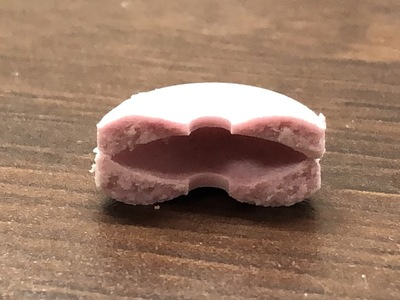
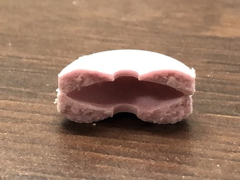

おはようございます。
今回は、金曜2限デジタルファブリケーションの課題であります、
3Dプリントを用いてピンセットを進化させるといった内容となっております。
1.制作テーマ決定までのストーリー
制作開始当初は、手足が十分に動かせない方が、
口でくわえて使えるピンセットを作ろう！
と、考えていました。
ストーリーボードは、こんな感じ。

いや、ムズすぎる。
3DCADを初めて触る私にとって、一番最初にやるべきではないと思いました。
じゃあ、これからどうしようかと考えたときに、
勉強しよう。
そう思いました。
そこで新たに考えられたピンセット案がこちら

当たり障りのない、ただただ勉強する為だけに考えられたピンセット。
しかしながら、この試作品が、後々大きな役割を果たしてくれます。
2.試作品からの着想
とりあえず作ってみた物がこれ

落書きする前の画像がありませんでした。申し訳ございません。
stlファイル出来上がって、しばらく作品を眺めていると、あることを思いつきます。
顔の部分、何かに似ていませんか？
そうです、フエラムネに似ていますね。
出典:amazon コリス フエラムネ8個×20袋
ここで、ピンセットに笛がついていたら、面白そう！
と思い立った訳です。
3.笛付きピンセットができるまで
そうと決まれば、早速取り掛かることにしましょう
そもそも、なぜフエラムネは音が鳴るのでしょうか。
仕組みは至ってシンプル。
 

息を吹き込むと、ラムネ内の空洞で空気による振動が起き、音が鳴る仕組み。
原理としては、風が吹いている日に、窓を少し開けると音が鳴ったり、
縄跳びを跳んでいる時やラケットを振ったときに音が鳴ったりするのと同じです。
詳しくはコチラ→フエガムもどき笛 - kyoto-Inetカルマン渦とは - コトバンク
仕組みが分かったら、次はモデリングです。
出来上がった物がコチラ

stlファイル
これを２つプリントし、上下逆さにくっつけて空洞を作ろうと考えました。
参考にしたサイト→平面に対するくぼみ（ディンプル） - Autodesk Communityプリントしたものがこれ
良い感じです。
これらを接着します
.jpg)
若干見づらいですが、中に空洞ができました。
実際に吹いてみます
音が鳴りました。構造は問題ないようですね。
しかし、音量は70dB後半といったところ。
もう少し音が大きくなるものを作ろうと思います。
出来ました


stlファイル